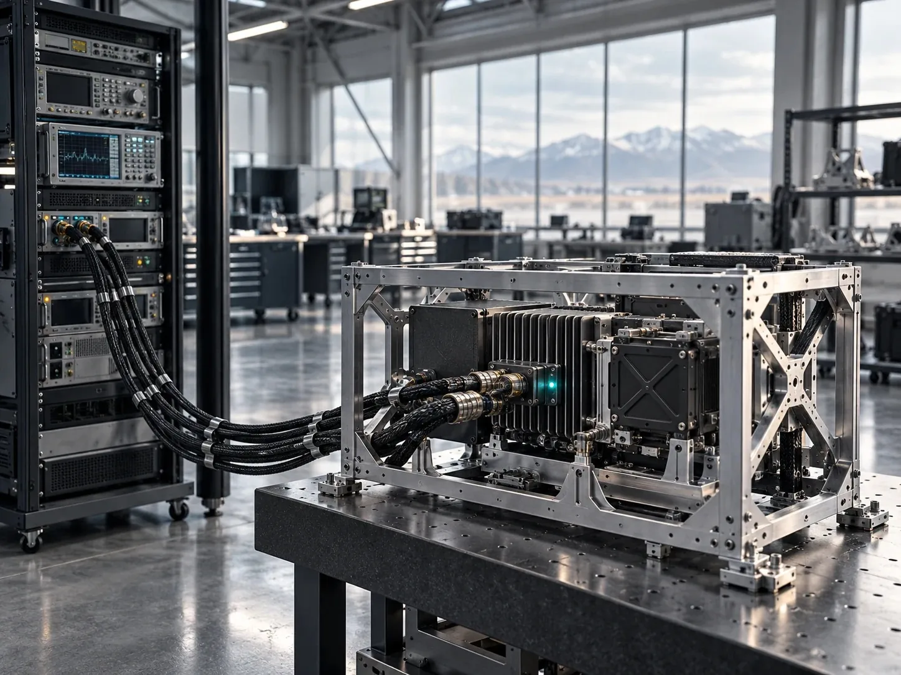
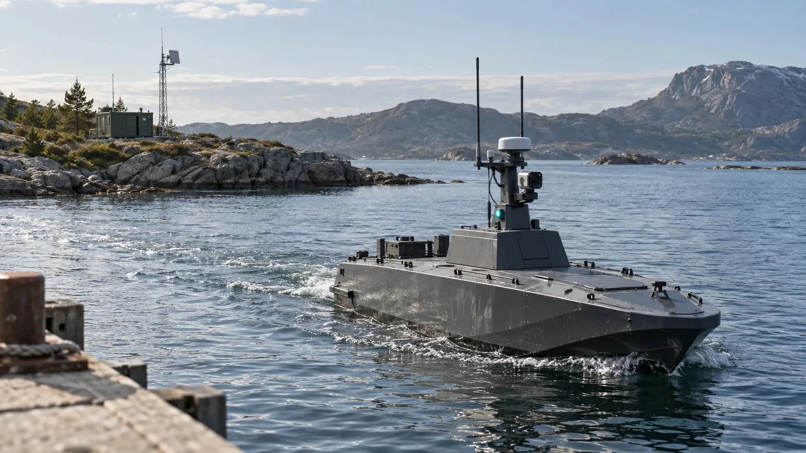

From tool mastery to domain judgment
Twin / Mission engineering
AI-assisted mission engineering that a new analyst can use on day one, and that a program office can brief with confidence
01 / The idea
Make new analysts productive without making them wrong
Speed alone is a liability
Describe a study in plain language and get back a scenario, a run and a result to inspect on the globe
02 / How a study runs
Every study takes the same path
-
01
Describe
The analyst says what to study in plain language, or drags it on the map.
-
02
Certify
Every scenario the AI writes passes a deterministic gate before it can run. The gate never relaxes a rule to get a pass.
-
03
Replay
Physics decides what happens. Every run can be reproduced from its fingerprint, so a replay returns the same result.
03 / Provenance
What a run ledger makes possible
-
01
Living analyses
Each conclusion is stored as a testable claim, tied to the runs and model versions behind it. When a model changes, Twin tests the claim again and flags any brief that cites a reversed finding.
Top priority
-
02
Brief to evidence
An analysis becomes a decision brief in which every number links back to its run, its assumptions and its certificate.
Decision briefs
-
03
Guided mission engineering
The steps of the DoD Mission Engineering Guide become conversational workflows, so new staff follow a proven method without knowing it by name.
DoD ME Guide
-
04
Experts that cite their sources
Domain experts compute with physics tools rather than recall, and ship only after passing an evaluation suite owned by a named expert.
Evaluation suites
04 / The gate
Five checks before a run
Cheapest first, and the first failure stops the run
Structural
Schema and catalog
The scenario matches the schema, and every platform resolves to a catalog entry.

Semantic
Validated envelopes
Conditions sit inside each model's validated envelope. Frames and epochs agree.
Physical
Feasibility
Kinematics, fuel, range, line of sight and orbits are feasible.

Doctrinal
Rules and timeline
Rules of engagement, order of battle and timeline logic hold.
Expert review
A person decides
A person reviews what changed against the baseline when stakes are high or the case is new.
The only path into execution
05 / The rule
The AI proposes, physics disposes
- 01
A language model never decides whether an engagement succeeds
- 02
Rules are data the AI cannot edit
- 03
Provenance is an output
06 / Where Twin stands
The foundation already exists
- Platforms in the validated catalog today
- ~1,090
- Domains in one synchronized run today
- 6
- Checks in the gate design
- 5
- Pieces left to build: the gate, a run ledger and fast surrogate models
- 3
Built today: a validated platform catalog, a multi-domain engine with high-fidelity radar physics, and review and replay on the globe. The assistant already authors scenarios and explains runs.
07 / Contact
One thin slice, end to end
The first slice is a single scenario type, and each increment ends in a test, not a demo